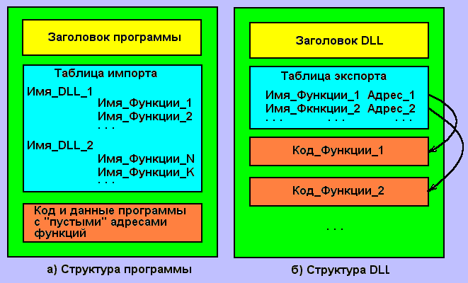
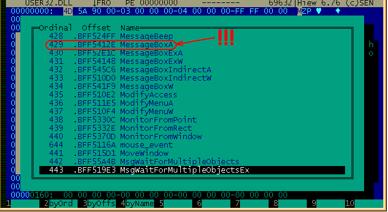
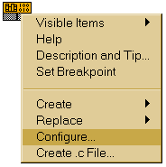
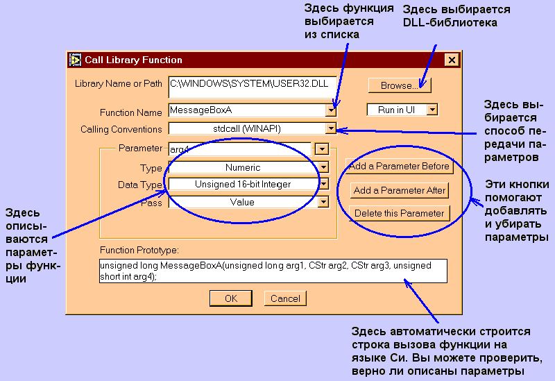
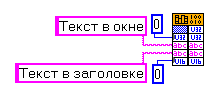
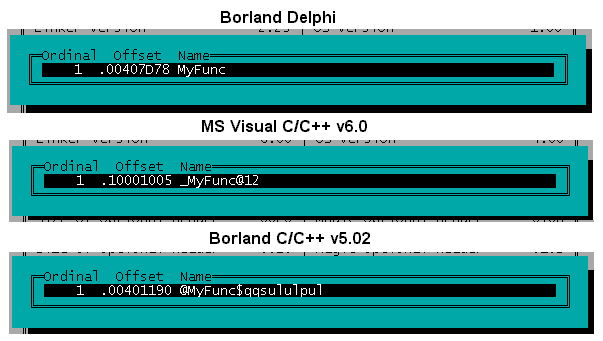
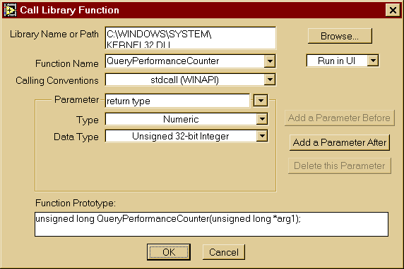
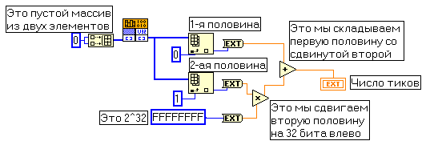

Климентьев К.Е. Доступ из LabVIEW к DLL
|
Почему вдруг я решил добавить “свои 5 коп.” ко вроде бы неплохо освещенному (см., например, http://www.labview.ru/DLLcall.pdf) вопросу? Дело в том, что при практическом использовании “Call Library Function” приходится сталкиваться с рядом очень неочевидных тонкостей, которые, как оказалось, далеко не всем по зубам.
1. Что такое DLL?
DLL (Dynamic Link Library) – это динамически компонуемая библиотека, т.е. набор “популярных” процедур и функций, которые оформлены в виде отдельного программного модуля, и к которым могут обращаться любые программы. В частности, практически все Windows-программы в процессе своей работы обязательно обращаются к десяткам общедоступных библиотек от Microsoft. Например,
- KERNEL32.DLL – набор стандартных системных функций Windows для работы с файлами, памятью, для запуска и завершения процессов и потоков и т.п.;
- USER32.DLL – системные функции Windows для поддержки оконного интерфейса, мыши и клавиатуры;
- GDI32.DLL – графические функции Windows;
- WSOCK32.DLL – сетевые функции;
- ADVAPI.DLL – служебные и вспомогательные функции Windows, например, для шифрования-дешифрования данных, для работы с реестром и т.п.
Нередко полезные DLL появляются на компьютере вместе со вновь установленными приложениями. Кроме того, программист может создавать свои DLL самостоятельно.
2. Как устроен и работает механизм DLL?
Для успешной работы с DLL необходимо хотя бы самое поверхностное представление о принципах ее устройства и использования.
“Типичная” DLL (см. рис. 1, б) представляет собой программный модуль, содержащий некоторое количество процедур и функций. Для того, чтобы к этим процедурам и функциям можно было обращаться из других программ, в DLL имеется специальная таблица экспорта, которая содержит имена функций и их стартовые адреса (“точки входа”) внутри DLL.
Наоборот, “типичная” прикладная программа (см. рис. 1, а) для доступа к функциям DLL содержит таблицы импорта, в которые внесены имена DLL-библиотек и тех процедур и функций, которые программу интересуют.

Рис 1. Форматы программных модулей
В “типичном” случае в процессе запуска программы Windows:
- прочитывает из программы имена DLL-библиотек и загружает их в память;
- загружает в память саму программу;
- прочитывает из программы имена функций, ищет эти имена (и соответствующие им адреса) в загруженных DLL и вставляет найденные адреса функций внутрь программы в нужных местах;
- передает управление программе.
Нас будет интересовать “нетипичный” случай – когда программа заранее не знает, какие функции из какой DLL будет использовать (это так называемый “неявный импорт”). У таких программ таблица импорта может отсутствовать. Программа самостоятельно:
- загружает требуемую DLL-библиотеку в память;
- зная имя интересующей функции, определяет ее адрес внутри загруженной DLL;
- обращается к функции по найденному адресу.
Механизм “Call Library Function” в LabVIEW работает именно так!
3. Примеры вызова функций
Пусть “подопытным кроликом” для нас послужит классическая функция “MessageBox” из библиотеки USER32.DLL. В любом справочнике по Win32 API можно найти ее описание, повествующее, что функция требует 4 параметра:
- целое 32-битовое число – идентификатор родительского окна (либо 0, если родительского окна нет);
- текстовая строка, которая будет показана в окне;
- текстовая строка, которая будет показана в заголовке окна;
- целое 16-битовое число - состав и вид кнопок (0 – кнопка “ОК”, 1- “OK” и “Cancel”, 2 – “Abort”, “Retry” и “Ignore”, и т.п.).
Давайте проверим, присутствует ли эта функция в USER32.DLL. Я предпочитаю пользоваться знаменитой программой HIEW Евгения Сусликова (см. рис. 2), хотя можно воспользоваться, например, утилитой DUMPBIN, либо просто посмотреть внутрь DLL-библиотеки в любом вьювере.

Рис. 2. Таблица экспорта библиотеки USER32.DLL
“Вот тебе и здрасьте” (с). Нет в библиотеке никакой функции “MessageBox”, а вместо нее присутствует какая-то “MessageBoxA”. Все правильно. На самом деле, в стандартных динамических библиотеках Windows для многих функций, которые работают с текстовыми параметрами, имеются два варианта:
- один с именем, заканчивающимся на “A” (для “обычных” ASCII-строк);
- другой с именем, заканчивающимся на “W” (для UNICODE-строк).
“Умные” компиляторы (Borland Delphi, Borland C/C++ Builder, MS Visual C/C++ и пр.) сами определяют тип используемой строки и вставляют в таблицы импорта программы “правильное” имя. Поэтому-то в справочниках и приводятся имена функций без “A” и “W”. Но если мы решили вызывать функции из DLL напрямую, в том числе и средствами LabVIEW, нам нужны “подлинные” имена!
Теперь можно рассмотреть конкретные примеры непосредственного вызова функции “MessageBoxA” из библиотеки USER32.DLL.
Вот как это делается на языке Си:
#include <windows.h>
typedef WORD (WINAPI* TTT) (DWORD, BYTE *, BYTE *, WORD);
TTT _MessageBox; h : DWORD;
main() {
h = LoadLibrary("USER32.DLL");
_MessageBox = (TTT)GetProcAddress(GetModuleHandle("USER32.DLL"),"MessageBoxA");
_MessageBox(0, "Текст в окне", "Заголовок окна", 0);
}
Вот как это делается на Паскале (Borland Delphi):
program EXAMPLE;
{$APPTYPE CONSOLE}
uses windows;
{$R *.RES}
type TTT = function ( h: DWORD; s1, s2: PCHAR; t : WORD) : WORD; stdcall;
VAR _MessageBox : TTT; h : THandle;
begin
h:=LoadLibrary('USER32.DLL');
_MessageBox := GetProcAddress( GetModuleHandle('USER32.DLL'), 'MessageBoxA');
_MessageBox(0, 'Строка в окне', 'Строка в заголовке', 0);
end.
Ну и пример на LabVIEW:
- в окно блок-схемы кладется узел “Call Library Node”, по нему кликается правой кнопкой мыши и в меню выбирается пункт “Configure” (см. рис. 3).

Рис. 3. Узел “Call Library Node”
в открывшемся окне описывается формат вызова функции – из какой библиотеки она берется, какие у нее параметры и т.п. (см. рис. 4).

Рис. 4. Описание формата вызова функции
Наконец, осталось нажать кнопку OK, присоединить к узлу нужные параметры (см. рис. 5) и запустить виртуальный прибор.

Рис. 5. Передача параметров
Ко всем трем примерам необходимо сделать несколько очень важных общих замечаний.
3.1. Типы параметров
Несмотря на то, что в высокоуровневых языках программирования используются десятки и сотни различных типов данных, на самом деле все они являются модификациями сравнительно небольшого набора “базовых” типов (см. табл 1).
Массив какого-либо типа - это всего лишь указатель на его первый по счету элемент. Тоже самое можно сказать о сложных типах – “struct” в Си, “record” в Паскале и “cluster” в LabVIEW. Текстовая строка в Си – это массив байтов, заканчивающийся нулем, т.е. указатель на 8-битовый байт. В Паскале строка устроена похоже, только в конце нет нуля, зато самый первый по счету байт (т.е. байт с номером 0) – это не символ текста, а счетчик длины строки. UNICODE-строки устроены по такому же принципу, только это массивы не байтов, а 16-битовых слов.
Таблица 1
Соответствие типов
|
Си |
Паскаль |
“Базовый” тип |
|
WCHAR |
WideChar |
16-битовое слово |
|
LPSTR |
Pchar |
Массив 8-битовых байтов |
|
LPCSTR |
Pchar |
Массив 8-битовых байтов |
|
LPWSTR |
PwideChar |
Массив 16-битовых слов |
|
LPCWSTR |
PwideChar |
Массив 16-битовых слов |
|
DWORD |
Integer |
Двойное слово 32 бита |
|
BOOL |
LongBool |
Двойное слово 32 бита |
|
PBOOL |
^BOOL |
Указатель на 32-битовое двойное слово |
|
PINT |
^Integer |
указатель на 16-битовое слово |
|
PWORD |
^Word |
указатель на 16-битовое слово |
|
PDWORD |
^DWORD |
указатель на 32-битовое двойное слово |
|
LPDWORD |
PDWORD |
указатель на 32-битовое двойное слово |
|
UCHAR, BYTE, char |
Byte |
8-битовый байт |
|
PUCHAR |
^Byte |
Указатель на 8-битовый байт |
|
SHORT |
Smallint |
16-битовое целое |
|
UINT, WORD, int |
Integer |
16-битовое слово |
|
PUINT |
^UINT |
указатель на 16-битовое слово |
|
ULONG, DWORD, double |
Longint |
32-битовое двойное слово |
|
PULONG |
^ULONG |
Указатель на 32-битовое двойное слово |
|
Int |
Integer |
16-битовое слово |
|
Long |
LongInt |
32-битовое двойное слово |
|
PVOID |
Pointer |
Указатель на 8-битовый байт |
|
HANDLE |
THandle |
32-битовое двойное слово |
3.2. Способы передачи параметров
Все параметры в функцию и обратно обычно передаются через стек (и только иногда через регистры). Известно большое число различных способов передачи параметров, но чаще всего используются 3 из них:
- формат языка Паскаль – параметры записываются в стек в том порядке, в каком они перечисляются, перед завершением функции стек очищается внутри ее;
- формат языка Си – параметры записываются в стек в обратном порядке по сравнению с тем, в каком они перечисляются, после завершения функции стек очищается в вызывающей программе;
- формат API-функций Microsoft (так называемый “stdcall”) - параметры записываются в стек в обратном порядке по сравнению с тем, в каком они перечисляются, перед завершением функции стек очищается внутри ее.
Вот почему при вызове функций из стандартных DLL-библиотек Windows необходимо обязательно указывать, что формат передачи параметров соответствует соглашению “stdcall” (или “WINAPI”, что в данном случае тоже самое).
4. Создаем DLL сами
Осталось рассмотреть самое интересное и сложное – самостоятельное создание DLL-библиотек для подсоединения к виртуальным приборам LabVIEW. Пусть нам нужна DLL, складывающая два числа. Для обеспечения совместимости потребуем, чтобы все функции использовали параметры в стиле “stdcall”.
Вот исходный текст на Си (компилятор Borland C/C++ v5.02):
#include <windows.h>
void __export __stdcall MyFunc( DWORD x, DWORD y, DWORD *sum) {
*sum = x+y;
}
Еще вариант для Си (компилятор MS Visual C/C++ v. 6.0):
#include <windows.h>
#include "stdafx.h"
#define EXPORT extern "C" __declspec (dllexport)
EXPORT void CALLBACK MyFunc( DWORD x, DWORD y, DWORD *sum) {
*sum = x+y;
}
А вот на Паскале (Borland Delphi):
library MyDLL;
uses SysUtils, Classes;
procedure MyFunc(x, y : integer; var sum : integer); stdcall;
begin sum := x + y end;
exports MyFunc;
begin end.
Итак, DLL-библиотеки успешно созданы. Давайте изучим таблицы экспорта скомпилированных библиотек при помощи HIEW (см. рис. 6). Кошмар! С задачей правильно справился только компилятор Borland Delphi, остальные же сгенерировали какую-то ерунду!

Рис. 6. Таблицы экспорта сгенерированных DLL
Этот эффект называется “манглинг” (от to mangle (англ.) – искажать, калечить). Компиляторы с языка Си дополняют имена функций своими служебными “префиксами” и “суффиксами”, и в таком виде помещают в таблицы экспорта DLL-библиотеки. Если вы обращаетесь к этим функциям из программы, созданной при помощи того же компилятора, проблем не возникнет – компилятор сам добавляет “хвосты”, сам же их и уберет в нужный момент. В противном случае необходимо точно знать правильное имя функции с учетом всех “закорючек”. Кстати, это тоже не панацея: LabVIEW некоторых версий просто отказывается видеть внутри DLL имена с “закорючками”!
Решение проблемы в том, чтобы при компиляции DLL библиотек учитывать содержимое специальных DEF-файлов. Вот такой файл должен использоваться в Borland C/C++:
EXPORTS
MyFunc = @MyFunc$qqsululpul
А вот такой в VC:
EXPORTS
MyFunc
И только теперь все получится “чики-пики”.
Приложение.
Использование в LabVIEW функции “QueryPerformanceCounter”
Эта функция возвращает количество тиков таймера, накопленное с момента включения компьютера. В Windows 95/98/ME используется системный таймер с частотой 1.19 МГц, а в Windows NT/2000/2003/XP/Vista может использоваться либо он, либо какой-нибудь другой таймер, интегрированный в материнскую плату. Поэтому функцию “QueryPerformanceCounter” нужно использовать в паре с функцией “QueryPerformanceFrequency”, которая возвращает частоту использованного таймера в герцах. Но речь не об этом.
Вот описание заголовка функции из справочника:
BOOL QueryPerformanceCounter (
LARGE_INTEGER *lpliPerformanceCount // адрес счетчика
);
А вот расшифровка нестандартного типа LARGE_INTEGER в файле winnt.h:
#if defined(MIDL_PASS)
typedef struct _LARGE_INTEGER {
#else // MIDL_PASS
typedef union _LARGE_INTEGER {
#if defined(_ANONYMOUS_STRUCT)
struct {
DWORD LowPart;
LONG HighPart;
};
#endif
struct {
DWORD LowPart;
LONG HighPart;
} u;
#endif //MIDL_PASS
LONGLONG QuadPart;
} LARGE_INTEGER;
Не надо пугаться! Все эти зубодробительные конструкции языка Си описывают всего лишь пару последовательно расположенных 32-битовых двойных слов. Следовательно, параметр функции “QueryPerformanceCounter” – указатель на 32-битовое двойное слово, и его лучше всего проинтерпретировать как массив из двух 32-битовых чисел (см. рис. 7).

Рис. 7. Конфигурирование обращения к функции “QueryPerformanceCounter”
Как их использовать? Ну, например, преобразовать в единое вещественное число двойной точности по правилу z=x<<32+y (см. рис. 8).

Рис 8. Получение числового значения счетчика
Вот и все. Теперь при помощи этой функции можно довольно точно измерять моменты и интервалы времени.
(с) Constantin E. Climentieff aka DrMad,
mailto: drmad@dr.com * http://drmad.chat.ru
|